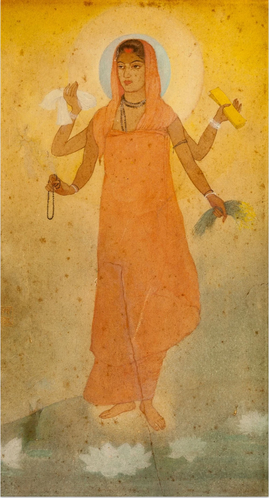

四本の手は、何を伝える？
白い布、本、数珠、穀物を別々の手に持っています。持ち物の違いから、国に必要なものへの願いを読み取れます。
作品・制作の例3件を紹介しています。実作品画像1点、参照・関連画像0点。画像の収集は継続中です。
絵画の運動・教育をめぐる流れ
Bengal School
淡い色の絵に、四本の腕をもつ人物が立っています。
《バーラト・マータ》は、国を母親の姿で表した絵です。
ベンガル派の画家たちは、イギリスの支配下で、ヨーロッパの描き方をお手本にするだけではない絵画を探しました。
「派」は考え方をともにする人々の流れを指し、一つの学校の名前ではありません。
実作品を見る

画像を表示できませんでした。下の出典ページで確認できます。
アバニンドラナート・タゴール / 1905年
白い布、本、数珠、穀物を別々の手に持っています。持ち物の違いから、国に必要なものへの願いを読み取れます。
建物や人混みを描かず、中心の人物を淡い色が囲みます。顔と四本の手へ目が向かいます。
Abanindranath Tagore, Bharat Mata, 1905. Victoria Memorial Hall, RBS27ANT. Image via Wikimedia Commons, PD-Art.
出典で作品・資料を見る ↗Public domain / PD-Art
Commons個別ページ：作者1951年没、原産国および死後70年以下の地域でPD。米国は1931年以前の公表を根拠にPD。
保護期間を終えた平面作品の忠実な複製として、CommonsがPD-Artと表示しています。
原画像を切り取らずに掲載しています。
全法域での権利保証ではありません。
画像の利用条件 ↗全体を残した縮小とWebP変換。色や構図は変更していません。
水彩・ウォッシュ
四本の腕をもつ母の姿に国を重ねた水彩画です。持ち物と人物の描き方から、絵が社会への願いを伝える仕組みを考えます。
作品・資料の出典を見る ↗作品名（出典表記）：母なるインド（バーラト・マータ／Bharat Mata）
アバニンドラナート・タゴール / 1905年 / 水彩・ウォッシュ
この作品一つで、すべての活動を代表するわけではありません。
水彩
「ウッタルゴーシュタ」連作の水彩画です。運動が広く展開する前の制作と、後年の国を表す絵を比べる入口になります。
作品・資料の出典を見る ↗作品名（出典表記）：船頭クリシュナ（Krishna, the boatman）
アバニンドラナート・タゴール / 1895–1897年 / 水彩
ベンガル派の前史に位置する作品です。1905年の政治状況をこの絵へそのまま当てはめません。
紙にウォッシュとテンペラ
薄い色を重ねる技法と、インドの小さな細密画（さいみつが。細部まで描いた絵）の表現が結びつく例です。師タゴールから何を学び、どう変えたかを考えられます。
作品・資料の出典を見る ↗作品名（出典表記）：サティー（Sati）
ナンダラル・ボース / 1907年 / 紙にウォッシュとテンペラ
この作品一つで、すべての活動を代表するわけではありません。
中心となったアバニンドラナート・タゴールは、昔のインドの絵画から新しい表現の手がかりを探しました。
教え子ナンダラル・ボースの《サティー》には、日本の絵画で使われる、薄い色を重ねる描き方との交流も見られます。
伝統を大切にすることと、外国から学ぶことは、必ずしも反対ではなかったのです。
《バーラト・マータ》では、だいだい色の衣服と淡い背景を見比べます。すべての作品がこの配色なのではありません。
主に絵画の流れなので、共通の書体はありません。署名や作品名に使う言語も、一点ずつ確かめます。
四本の手に持つ本、布、穀物、数珠（じゅず。祈りに使う玉のつらなり）には意味があります。ただの持ち物として見ず、国への願いをどう表すか考えます。
人物を中央に置き、その周りに空きを残しています。《サティー》では、人物が背景からどのように浮かび上がるかを比べられます。
同じ時代のインドの絵画すべてを、ベンガル派とは呼びません。また、シャンティニケタンの学校やそこで育った多様な制作とも、重なる部分と違う部分があります。
国や地域らしさは、初めから一つに決まっているのでしょうか。画家が何を選び、何を描かなかったかにも注目すると、絵と社会のつながりが見えてきます。
選んだ作品と資料から入るための紹介です。全作家・全時期を網羅するものではありません。
作品・制作の例3件を紹介しています。実作品画像1点、参照・関連画像0点。画像の収集は継続中です。